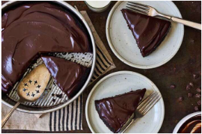

King Arthur Pan Cake cake

This is a cake I made when I needed to bring a vegan dish to a party.
Ingredients
- 1 1/2 cups (180g) King Arthur Unbleached All-Purpose Flour
- 1 cup (198g) granulated sugar
- 1/4 cup (21g) unsweetened cocoa, Dutch-process or natural*
- 1/2 teaspoon salt
- 1/2 teaspoon espresso powder, optional
- 1 teaspoon baking soda
- 1 teaspoon King Arthur Pure Vanilla Extract
- 1 tablespoon (14g) cider vinegar or white vinegar
- 1/3 cup (67g) vegetable oil
- 1 cup (227g) water, cold
For Icing
- 1 1/2 cups (255g) semisweet chocolate chips
- 1/2 cup (113g) half-and-half
Steps
- Preheat your oven to 350°F. Lightly grease an 8" square or 9" round pan that's at least 2" deep.
- Whisk the dry ingredients together in a medium-sized bowl. Whisk the vanilla, vinegar, vegetable oil, and water in a separate bowl. Pour the wet ingredients into the bowl of dry ingredients, stirring until thoroughly combined. Pour the batter into the prepared pan.
- Bake the cake for 30 to 35 minutes, until a toothpick inserted into the center comes out clean, or with a few moist crumbs clinging to it.
- Serve the cake right from the pan; warm from the oven, it's wonderful with a big glass of milk.
- Or, once cool, frost the cake with this simple chocolate frosting: Heat the chocolate chips with the half-and-half until the chips melt. Stir until smooth, and pour/spread over the cake. For a non-dairy icing, substitute 1/3 cup cold brewed coffee (or water) for the half-and-half.
- Store cake, well covered, at room temperature for several days; freeze for longer storage.